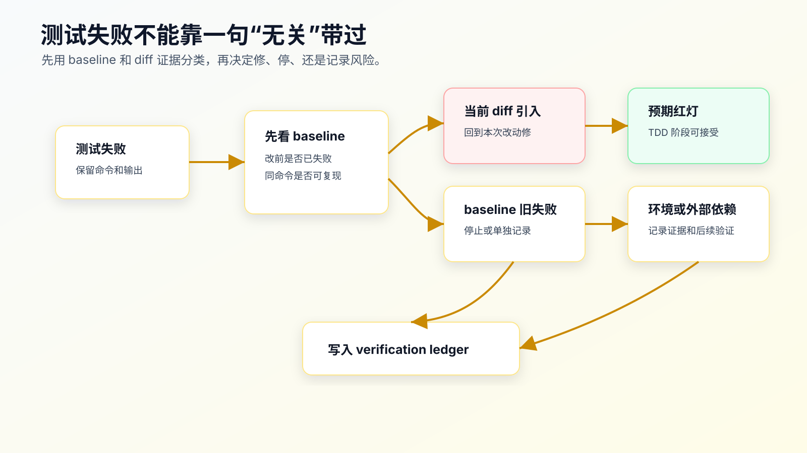
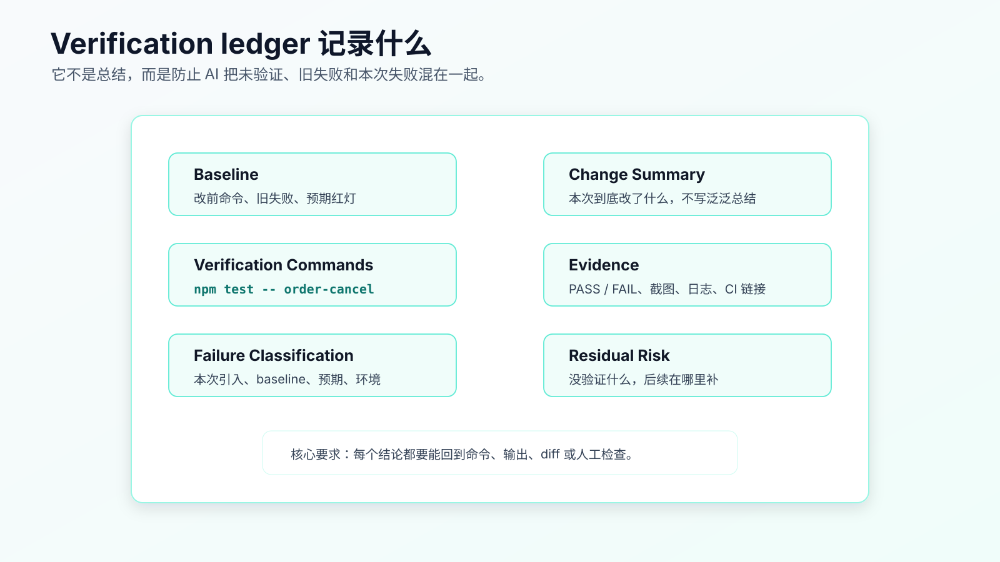

AI 说“测试失败无关”时，程序员该怎么判断
AI Coding 里有一句话特别危险：
这个测试失败和本次修改无关。
它可能是真的。
真实项目里确实会有 baseline failure：改代码前就已经失败的测试、环境不稳定导致的失败、外部依赖不可用、CI 上才出现的问题。
但它也可能是 AI 在逃避当前 diff 的影响。
如果你直接相信这句话，就可能把本次改坏的行为带进下一步。如果你完全不信，又会被旧失败拖住，无法推进。
程序员需要的不是态度，而是分类方法。
判断一个测试失败是否“无关”，至少要回答四个问题：
改前是否已经失败？
同一个命令能否复现？
失败路径是否经过本次修改？
失败行为是否被当前需求覆盖？
回答不了，就不能说无关。

先保留原始失败证据
第一步不是问 AI 怎么看。
第一步是保留命令和输出。
例如：
npm test -- order-cancel
输出：
FAIL test/order/order-cancel.test.ts
duplicate paid cancellation creates one refund request
Expected: 1
Received: 2
这类失败看起来就很可能和本次修改有关，因为它直接对应订单取消和退款请求。
另一个例子：
FAIL test/user/avatar-upload.test.ts
Timeout waiting for image resize worker
它可能无关，但还不能直接下结论。要看本次 diff 有没有改 worker 配置、测试环境、全局 setup、依赖版本。
所以不要让 AI 用一句话盖过去。要求它输出：
Failure:
- command
- failing test
- first failing assertion
- actual / expected
- stack or log
- changed files that could affect it
没有这些证据，所谓“无关”只是判断，不是结论。
baseline 是判断的关键
baseline 的意思是：改动前，同一个命令是什么状态。
最理想的情况，是你在开工前就跑过：
npm test -- order-cancel
并记录：
Baseline:
- `npm test -- order-cancel`: pass
如果改后失败，那就不能轻易说无关。
如果改前已经失败，要记录：
Baseline:
- `npm test -- avatar-upload`: failed before this change.
- failure: Timeout waiting for image resize worker.
- evidence: CI run #123 / local command output.
问题是，很多时候你没有改前 baseline。
这时可以用 Git 辅助判断：
git diff --name-only
git diff -- test/order/order-cancel.test.ts
还可以回到最近的干净提交或主分支复现。但要注意，不要在当前工作区粗暴切分支，避免丢掉未提交改动。可以使用单独 worktree，或者在 CI 里看历史结果。
没有 baseline 时，最多只能写：
Not proven unrelated.
Current evidence suggests it may be unrelated because ...
Need baseline confirmation.
不能写“确认无关”。
baseline 可以从哪里来
baseline 不一定只能来自你开工前本地跑过的命令。
常见来源有几种：
- 开工前本地命令输出。
- 主分支或目标分支的 CI 结果。
- 最近一次通过的 workflow run。
- 单独 worktree 上复现结果。
- 团队已知 flaky test 记录。
- issue 或测试稳定性看板。
每种证据强度不同。
最强的是同一分支、同一命令、同一环境、改动前已经失败或通过。
CI 历史有用，但要看是否同环境。同一个测试在 macOS 本地通过、Linux CI 失败，不能简单归类。
如果要在本地验证主分支，不要在当前脏工作区乱切分支。可以用单独 worktree：
git worktree add ../baseline-check main
cd ../baseline-check
npm test -- order-cancel
如果仓库不适合新建 worktree，就查 CI 历史，或者记录 baseline 未确认。
关键是不要让 AI 用“我觉得不像相关”代替 baseline。
失败可以分成四类
测试失败通常可以分成四类。
第一类：当前 diff 引入。
特征：
- 改前通过，改后失败。
- 失败路径经过本次修改文件。
- failure assertion 对应当前需求或相邻行为。
- 回滚当前 diff 后失败消失。
这类必须在当前任务里处理，不能记录成残余风险。
第二类：baseline 旧失败。
特征：
- 改前已经失败。
- 与本次 diff 没有调用路径或配置关系。
- 失败日志和历史失败一致。
这类可以记录，但不要混进当前 diff。需要单独任务修。
第三类：预期红灯。
TDD 阶段新增失败测试，本来就应该失败。
例如 Task 1 只写测试：
Expected before implementation:
- paid cancellation test fails.
- duplicate cancellation test fails.
- pending and shipped tests pass.
这种失败不是无关，也不是 bug。它是当前阶段的预期证据。
第四类：环境或外部依赖。
例如浏览器下载失败、测试数据库不可用、CI secrets 缺失、第三方服务不可达。
这类也不能直接忽略。要记录：
- 哪个环境失败。
- 本地是否复现。
- 失败是否阻断当前结论。
- 后续在哪里验证。
只有分类清楚，才能决定下一步。
让 AI 先分类，不要先修
看到失败后，不要说：
修一下测试。
要说：
先不要改代码。
请对测试失败做分类：
- current diff introduced
- baseline existing failure
- expected red test
- environment / external dependency
要求：
- 引用失败命令和关键输出。
- 检查本次 changed files。
- 说明失败路径是否经过本次修改。
- 如果不能证明无关，就写 not proven unrelated。
- 不要修复。
这能阻止 AI 直接把失败压掉。
如果它说“无关”，继续追问：
你需要给出证据：
- 改前是否失败？
- 哪个日志或历史运行证明？
- 本次 diff 为什么不可能影响它？
- 是否存在共享配置、全局 setup、依赖版本、测试数据影响？
没有证据，就不能接受。
失败路径是否经过本次 diff
这是很实用的判断。
看改动文件：
git diff --name-only
看失败堆栈：
at cancelOrder (src/order/order-cancel-service.ts:42:18)
at test/order/order-cancel.test.ts:87:24
如果堆栈经过本次修改文件，就高度相关。
如果失败是前端 E2E：
Timeout waiting for getByText('退款处理中')
本次 diff 改了：
src/order/order-cancel-service.ts
src/api/order-controller.ts
src/ui/order-detail.tsx
也不能说无关。页面等不到文案，可能是后端没返回新状态、接口 shape 变了、前端状态没刷新。
反过来，如果失败是：
test/user/avatar-upload.test.ts
本次 diff 只改：
src/order/order-status-transition.ts
test/order/order-cancel.test.ts
且没有共享测试 setup、依赖、全局配置变化，才有初步无关的可能。
注意，是“初步可能”，不是直接确认。
验证 ledger：把判断写下来
测试失败分类不能只留在聊天里。
可以写到 verification ledger。

一个可用结构：
# Verification Ledger
## Baseline
- `npm test -- order-cancel`: pass before Task 2.
- No known failure in order cancellation tests.
## Change Summary
- Added paid -> refund_requested transition.
- Wired refund request creation.
- Did not change payment provider callback.
## Verification Commands
```bash
npm test -- order-cancel
npm test -- order
Evidence
npm test -- order-cancel: PASS, 12 tests.npm test -- order: FAIL,avatar-upload.test.tstimeout.
Failure Classification
avatar-upload.test.tsfailure is not proven related to this diff.- It does not pass through changed files.
- No dependency, global setup, or worker config changed.
- Baseline still needs confirmation from main branch or CI history.
Residual Risk
- Broader
npm test -- orderdid not complete cleanly. - Do not claim full module verification until baseline is confirmed.
注意这段没有写“测试全过”。它写的是更准确的结论：
```text
focused tests pass.
broader command has an unclassified or not-proven-related failure.
full module verification not complete.
这比 AI 的一句“无关失败”更可信。
配套工具能检查记录是否完整
配套工程的工具 module 里有一个很小的 verify-ledger 命令，用来检查验证记录是否至少包含必要段落、命令块和通过信号。
通过样例：
node src/cli.js verify-ledger --file examples/verification-ledger.pass.md
输出：
Verification ledger looks usable: required sections, command block, and pass signal found.
失败样例：
node src/cli.js verify-ledger --file examples/verification-ledger.fail.md
输出：
Verification ledger is incomplete.
Missing sections: Change Summary, Verification Commands, Evidence, Residual Risk
Missing command block with the verification command.
这个工具不判断业务正确性，也不判断失败是否真的无关。
它只做一件事：防止验证记录连基本证据都没有。
真正的判断仍然要靠你看命令、输出、diff、堆栈和影响范围。
AI 说“无关”时的追问模板
可以直接用这段：
不要只说无关。
请按下面格式证明：
1. Failing command:
2. Failing test / assertion:
3. Actual vs expected:
4. Changed files in this diff:
5. Does the failing stack/path pass through changed files?
6. Was this failing before the change? Evidence?
7. Could shared setup/config/dependency/test data connect it to this diff?
8. Classification:
9. Recommended action:
如果缺少 baseline evidence，请写 "not proven unrelated"。
这个模板能逼 AI 从结论退回证据。
哪些失败不能归为无关
下面这些情况，不要轻易接受“无关”：
- 失败测试和本次需求同领域。
- 失败堆栈经过本次修改文件。
- 失败 assertion 对应本次需求的边界。
- 本次 diff 改了共享工具、测试 setup、配置、依赖、全局类型。
- 本次 diff 改了 API response shape。
- 本次 diff 改了异步时序、缓存、队列、事务边界。
- 没有改前 baseline。
特别是共享配置和依赖。
很多看似无关的失败，实际来自：
test setup
mock server
global fixture
date/time helper
serializer
dependency lockfile
environment variable
AI 很容易只看业务文件名，忽略这些共享层。
什么时候可以接受“先记录，不阻塞”
不是所有失败都要在当前任务里修。
可以先记录、不阻塞的条件是：
- focused tests 覆盖当前需求且通过。
- broader failure 有证据显示不是当前 diff 引入。
- 失败已经有 baseline 或历史记录。
- 当前 diff 没有触碰共享 setup、配置、依赖。
- ledger 里明确写了残余风险。
- 后续有单独任务或 CI 跟踪。
例如：
Accept with residual risk:
- `npm test -- order-cancel`: pass.
- `npm test -- order`: fails on existing `avatar-upload.test.ts` timeout.
- Same failure exists on main branch CI run #123.
- Current diff touches only order status transition and order cancel tests.
- Follow-up issue: stabilize avatar upload worker test.
这时可以继续，但不能把验证口径写成“所有测试通过”。
只能写：
Focused verification passed. Broader suite has known baseline failure.
什么时候必须阻塞
下面这些情况不能放行：
- focused tests 失败。
- 失败路径经过本次修改文件，且没有反证。
- 本次需求的核心 scenario 失败。
- API contract、数据库状态或副作用验证失败。
- baseline 未确认，且失败在同一业务领域。
- 测试被 AI 改弱后才通过。
- CI 必需检查失败，且失败与当前模块相关。
这时应该写：
Blocked:
- failure may be related to current diff.
- baseline is not confirmed.
- do not proceed to next task.
“记录残余风险继续推进”只适合已证明不影响当前交付核心结论的情况。否则就是把未知风险往后推。
检查 shared setup，别只看业务文件
很多“看起来无关”的测试失败，最后都来自共享层。
需要重点检查：
test setup
global fixture
mock server
serializer
date/time helper
environment variables
dependency lockfile
build config
browser config
database migration
比如本次只改订单取消，但顺手改了 test/setup.ts 里的全局 mock，头像上传测试失败就不能直接说无关。
可以让 AI 输出：
Shared surface check:
- Did this diff touch test setup? no
- Did this diff touch dependency lockfile? no
- Did this diff touch serializers or API client? yes, `src/api/client.ts`
- Could failing test use that API client? yes
- Classification: not proven unrelated
这比只看失败测试文件名可靠得多。
AI 改测试后，要重新分类
如果 AI 在修复过程中改了测试，原来的失败分类可能失效。
需要看：
- 是否删除了失败断言。
- 是否放宽了 expected。
- 是否把测试改成 skip 或 only。
- 是否把真实路径换成 mock 路径。
- 是否改了 fixture，让测试不再覆盖原场景。
可以要求：
请列出本次测试文件改动：
- 新增了哪些断言。
- 删除或放宽了哪些断言。
- 是否有 skip/only。
- 是否改变 fixture 状态。
- 每个测试改动对应哪个 requirement。
如果测试被改弱，不能接受“测试通过”作为证据。要回到 requirement 和失败输出重新判断。
把无关失败变成可追踪事项
确认是 baseline 旧失败后，也不要只在聊天里说一句“无关”。
至少写进 ledger 或 issue：
Known baseline failure:
- `test/user/avatar-upload.test.ts` timeout.
- Exists on main branch CI run #123.
- Current diff does not touch upload, worker setup, or shared test config.
- Follow-up: stabilize avatar upload worker test.
这样后续不会反复争论同一个失败。
如果是团队项目，最好有 issue 或 CI 注释承接。否则“无关失败”会不断消耗 review 信任。
一个判断案例：avatar 测试失败是否无关
场景：
本次改动：
- `src/order/order-status-transition.ts`
- `test/order/order-cancel.test.ts`
验证：
- `npm test -- order-cancel`: PASS
- `npm test -- order`: FAIL `test/user/avatar-upload.test.ts`
AI 说：
avatar-upload 和订单取消无关，可以忽略。
这句话不能直接接受。先查四件事。
第一，改动文件是否真的只在订单模块：
git diff --name-only
如果没有共享文件、锁文件、test setup、API client 变化，初步支持无关。
第二，失败堆栈是否经过本次改动：
avatar-upload -> image resize worker -> upload service
如果路径不经过订单模块，也支持无关。
第三，baseline 是否存在。
如果主分支 CI 上同一个 avatar 测试已经失败，证据更强。没有 baseline，就只能写 not proven unrelated。
第四，当前验证口径怎么写。
可以写：
Focused verification:
- `npm test -- order-cancel`: PASS
Broader verification:
- `npm test -- order`: FAIL on `avatar-upload.test.ts`
Classification:
- not proven related to current diff.
- changed files limited to order status and order cancel tests.
- failing path does not pass through changed files.
- baseline still needs confirmation.
Conclusion:
- do not claim full module verification.
- current order focused verification passed.
如果后来确认主分支也失败，再更新：
Baseline confirmed:
- same avatar-upload timeout exists on main CI run #123.
- follow-up issue linked.
这样既不被旧失败拖住，也不会把未知失败包装成已验证。
给 Agent 的失败分类指令
可以固定使用这段：
先不要修改代码。
请对当前测试失败做分类：
1. current diff introduced
2. baseline existing failure
3. expected red test
4. environment / external dependency
必须输出：
- failing command
- failing test / assertion
- actual vs expected
- changed files
- whether failing path passes through changed files
- shared setup / config / dependency check
- baseline evidence, if any
- classification
- recommended action
如果没有 baseline evidence，不要写 confirmed unrelated，只能写 not proven unrelated。
这段指令会迫使 AI 把“无关”拆成证据。
放行结论要分级
测试失败后的结论不要只有“能不能继续”两档。
可以分四级：
Pass:
- required focused and broader checks passed.
Pass with known baseline:
- focused checks passed.
- broader failure confirmed as baseline.
- residual risk recorded.
Blocked:
- failure may be related to current diff.
- baseline missing or path overlaps.
Expected red:
- failure is expected in current TDD step.
- implementation not started yet.
对应写法：
Verification conclusion:
- Pass with known baseline.
- Current order cancel focused tests passed.
- Broader suite still has known avatar-upload baseline failure.
- Full suite is not clean; follow-up issue linked.
这比“测试基本通过”准确得多。
不要把环境失败当成业务成功
有些失败看起来和业务无关，比如浏览器没装、数据库没启动、CI secret 缺失。它们确实可能不是当前 diff 引入的，但它们也意味着某部分验证没有完成。
例如：
Playwright browser executable not found.
不能写：
前端验证无关，后端通过即可。
应该写：
Frontend E2E not executed:
- reason: Playwright browser missing in local environment.
- planned evidence: user path shows refund state after cancel.
- replacement: none yet.
- residual risk: page path not verified.
环境失败不一定阻塞所有任务，但必须降低验证结论的等级。
PR 里怎么写失败分类
PR 描述里可以这样写：
Verification:
- `npm test -- order-cancel`: PASS
- `npm test -- order`: FAIL on `test/user/avatar-upload.test.ts`
Failure classification:
- avatar failure is a known baseline failure on main CI run #123.
- current diff does not touch upload, worker setup, shared test config, or lockfile.
- order focused tests cover the changed behavior and passed.
Residual risk:
- full `npm test -- order` is not clean in this workspace.
- follow-up issue: stabilize avatar upload worker test.
这段话不会把失败藏起来，也不会让旧失败阻塞当前订单改动。
如果没有 baseline，就要改成：
Failure classification:
- avatar failure is not proven unrelated.
- current diff does not appear to touch the failing path.
- baseline confirmation is still missing.
Conclusion:
- do not claim full module verification.
- decide whether this blocks merge based on release risk.
这种表达比“无关测试失败”更准确，reviewer 也能直接复查。
失败分类要防止范围漂移
如果为了证明失败无关，Agent 开始修改失败测试所在模块，那任务已经漂移。
比如当前任务是订单取消，AI 为了处理 avatar baseline failure，开始改图片 worker timeout。即使改对了，也不该混进当前 PR。
可以要求：
如果失败分类指向 baseline 旧失败：
- 不要修这个失败。
- 只记录证据和 follow-up。
- 当前 diff 不要新增与本任务无关的文件。
旧失败要修，应该开独立任务。这样当前需求的 diff 才保持可审。
最终判断要写得克制
测试失败分类后的结论不要夸大。
可以写：
Confirmed unrelated
只有在 baseline、路径、共享层都查清楚时才用。
多数情况下更适合写：
Not proven related to current diff.
或者：
Known baseline failure, tracked separately.
这几个表达差别很大。
“确认无关”是强结论；“未证明相关”是当前证据下的保守判断；“已知 baseline”说明有外部证据支持。
程序员最需要学会的是这种克制。AI Coding 不是把所有不方便的失败都解释掉，而是把证据强度和结论强度对齐。
如果结论强度不够，就不要用它支撑合并决策。可以继续补 baseline，也可以把失败作为阻塞项。
常见错误
错误一：没有 baseline 就说无关。
没有改前证据，只能说尚未证明相关或无关。
错误二：只看文件名。
测试文件名不相关，不代表共享配置、fixture、依赖不相关。
错误三：让 AI 直接修所有失败。
先分类，再决定修不修。否则旧失败会污染当前 diff。
错误四：把预期红灯当成 bug。
TDD 阶段新增失败测试可以是预期结果，要写清 expected before implementation。
错误五：把残余风险写成验证通过。
没跑完 broader suite，就不要写 full verification passed。
错误六：验证记录只有总结，没有命令。
没有命令和输出，就无法复查。
改完后重点看什么
判断测试失败是否无关，最后看这些证据：
- 是否有 failing command。
- 是否有 actual vs expected。
- 是否有改前 baseline。
- 是否检查了 changed files。
- 是否检查失败路径和共享 setup。
- 是否分类为当前 diff、baseline、预期红灯或环境问题。
- 是否写入 verification ledger。
- 是否准确表达 residual risk。
如果这些都没有，AI 的“无关”不值得采信。
AI Coding 的验证纪律，不是要求所有测试永远全绿，而是不能把未知失败包装成无关失败，也不能把部分验证包装成完整验证。
常见问题
如果没有时间确认 baseline 怎么办？
不要写“确认无关”。写“baseline 未确认，focused tests passed，broader failure unresolved”，并把它作为残余风险或阻塞项。
CI 上有旧失败，本地没有，算 baseline 吗？
要看同分支、同命令、同环境。CI 历史可以作为证据，但要说明环境差异。
AI 已经修好了失败，还需要分类吗？
需要。否则你不知道它修的是当前问题、旧问题，还是把测试改弱了。
所有测试都通过，还需要 ledger 吗？
复杂任务建议要。ledger 不只是记录失败，也记录你跑了什么、证明了什么、没证明什么。
verify-ledger 能判断测试失败是否无关吗？
不能。它只检查记录是否有基本结构和命令证据。业务判断必须由人看 diff、日志和测试覆盖。
可复查资料
- GitHub Actions workflow logs：https://docs.github.com/en/actions/monitoring-and-troubleshooting-workflows/using-workflow-run-logs
- GitHub Actions troubleshooting workflows：https://docs.github.com/en/actions/monitoring-and-troubleshooting-workflows/troubleshooting-workflows
- Git diff 官方文档：https://git-scm.com/docs/git-diff
- Git status 官方文档：https://git-scm.com/docs/git-status